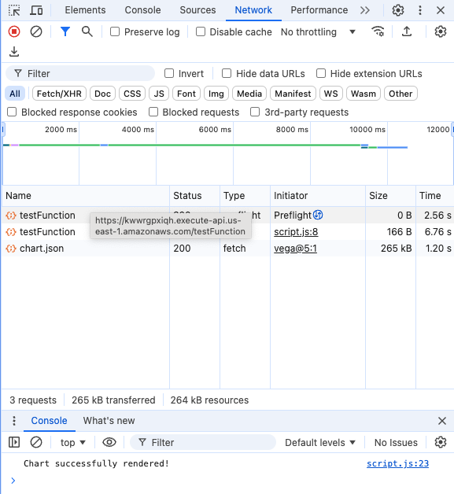

Project Description:
For our capstone project, we are aiming to develop a tool, in a form of
static website, hosted entirely on AWS cloud that performs forecasting based on user input on Google Trends data.
Our intended users are small retail business owners who can use this tool to understand how customer demands may
increase or decrease in the future, which would allow the owner to, for example, get additional inventory.
Instructions:
Enter a single, key based on interest (e.g., cake). Once entered, the value will be sent to
AWS cloud hosted by Vocareum, processed by NLP and forecasting ML models to return related terms that can be used for follow-up forecasts as well as
an Altair visualization to show forecast figures.
There can be some delay after input is entered due to preflight checks and ML processing. In order to understand what is happening, we recommend you use developer tools in Chrome by going to options > "More Tools" > "Developer Tools". What happens once you sent an input is that OPTION call is sent first to establish CORS (Cross Origin Resource Sharing). Once that is done, POST method is made and various AWS services together to produce output, which will be returned below. Please note that if you are running for the first time, the OPTION call might not return 200. If that happens, please re-send the input. We suspect this is happening due to initial start up time.

When enetering a search term, please make sure
that the term is as specific as possible (i.e., term "mocha" is preferred to "coffee").